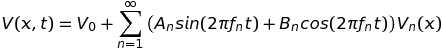
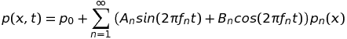
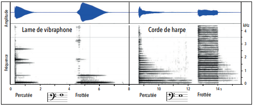

C'est avec raison que les amateurs du beau son vouent un culte à Jean-Philippe Rameau : il fut le premier compositeur et à peu de choses près le dernier à s'être soucié de la qualité acoustique de la musique qu'il écrivait. Rameau a tenté de s'en expliquer dans plusieurs traités successifs (1722, 1726, 1737) dont le premier, Traité de l'harmonie réduite à ses principes naturels, a fait date dans l'histoire de la musique. Servi par une intuition et un savoir-faire extrêmes, il a illustré la théorie physique (en gestation à cette époque) de l'émission des corps sonores reposant sur la notion d'harmoniques. Si les successeurs de Rameau ont honoré son oeuvre théorique, tout indique que s'ils l'ont lue ils n'en ont guère tenu compte. A leur décharge il faut bien admettre que l'adoption du tempérament égal n'allait guère dans le bon sens. De fait, à partir de l'ère classique, puis romantique et moderne, les critères acoustiques sont nettement passés au second plan. Ils sont pourtant resurgi de façon inattendue bien après la fin de la deuxième guerre mondiale dans le contexte de l'explosion technologique liée aux progrès de l'électronique. C'était au fond une réplique moderne de l'incursion ramiste de la science (cette fois version technologie) en musique.
De quelle technologie s'agit-il et que vient-elle faire en Musique, domaine de prédilection d'un contre-pouvoir à la Science toujours plus envahissante ? Pour répondre à cette question une plongée s'impose dans l'étude anatomique du son. Une métaphore médicale osée s'en dégage, où une sorte d'imagerie musicale prélude à la chirurgie du son et à l'orthophonie.
Anatomie du son
Tout objet élastique entre en vibration lorsqu'on le sollicite par une action extérieure. Au contact de l'air ambiant, cette vibration se transforme en une onde qui se propage jusqu'à atteindre un récepteur éventuel, microphone ou tympan humain. Vous trouverez des détails utiles dans une chronique antérieure relative aux principes acoustiques sinon les point suivants méritent d'être rappelés :
Elastique ne veut pas dire que l'objet est en caoutchouc ! Des objets d'apparence rigide peuvent parfaitement rentrer dans cette catégorie, songez à un pont suspendu dont le tablier peut - en fait doit - osciller pour éviter la rupture. En musique "classique", les instruments reposent traditionnellement sur les vibrations mécaniques de cordes, en boyau ou en métal, de plaques ou autres cloches, en bois ou en métal, de membranes tendues ou de colonnes d'air circulant dans des tuyaux percés. Ces instruments sont traditionnellement regroupés au sein de 4 grandes familles reconnaissables facilement (cordophones, idiophones, membranophones, et aérophones).
Une 5ème famille d'instruments existe depuis un siècle environ, celle des électrophones. Le principe de base est d'utiliser des circuits adaptés pour générer des tensions électriques oscillantes du type,

On utilise ces tensions pour alimenter des électro-aimants capables de faire vibrer à l'identique des membranes de haut-parleurs : on sort clairement du cadre de la musique acoustique au sens mécanique du terme. Il n'est pas nécessaire de détailler ici les principes physiques qui sont à la base des circuits oscillants, il suffit de comprendre que les tensions électriques créées peuvent être manipulées, en laboratoire. Par exemple, elles peuvent être amplifiées globalement, pour atteindre le niveau de puissance requis par la mise en branle de la membrane du haut-parleur ou localement, par filtrage sélectif, pour amplifier certaines fréquences et en atténuer d'autres et ce n'est pas tout car l'électronique ne connaît aucune limite, permettant toutes les manipulations que l'on peut souhaiter et qui peuvent résulter en autant de trafics sonores.
Pour être exploitable en musique, un son doit au moins être harmonique (au sens faible, Hf). On rappelle que cela signifie que l'excitation qui fait vibrer l'objet doit rester suffisamment modérée afin que les vibrations demeurent petites. Cette exigence est importante car c'est elle qui garantit que les vibrations sont sinusoïdales comme indiqué dans la formule ci-dessus. Un son qui ne serait même pas Hf ne mériterait pas ce nom et pour le distinguer on le rangerait dans la catégorie des bruits.
Lorsqu'un objet vibre sinusoïdalement, il ne le fait pas qu'à une seule fréquence de base, f1, il vibre également à d'autres fréquences, fn (n = 2, 3, 4, ...), sans doute une infinité. la formule précédente est à nouveau explicite à ce sujet : on y observe même si les amplitudes décroissent plus ou moins rapidement. Le son émis est donc complexe puisque résultant de la superposition d'un grand nombre de (sons) partiels de fréquences, fn (et accessoirement d'intensités, (An2 + Bn2)1/2). C'est cette complexité qui fait la richesse du son perçu au travers de la notion de timbre. L'organologie privilégie cependant les instruments harmoniques (au sens fort, HF), pour lesquels les fréquences partielles sont exactement multiples de la fréquence de base, fn = n c. Le son résultant est alors rigoureusement périodique à la fréquence de base, f1, qui désigne cette fois sans ambiguïté la hauteur de la note émise. Les sons périodiques sont précieux car ils permettent les coïncidences harmoniques sources de consonances agréables à l'oreille (Par exemple, le troisième harmonique d'un son quelconque (disons un do) est de même fréquence que le deuxième harmonique du son à la quinte (sol), cela résulte de l'égalité : 3f1 = 2 (3/2f1)).
Dans tous les cas, une membrane de haut-parleur fidèle vibre comme le signal électrique qui l'alimente. Il en résulte une onde sonore de pression vibrant à l'identique :

Bien que cette formule contienne toute l'information relative au son étudié, il est plus commode d'en afficher une représentation graphique imagée. La mode de représentation le plus utilisé est celui du sonagramme (On dit plus rarement sonogramme). Comme l'idée est d'afficher simultanément trois degrés de liberté, le temps écoulé, les fréquences partielles et l'intensité de chacune, il apparaît qu'une représentation à deux dimensions ne peut suffire. On s'en tire généralement en recourant à l'artifice suivant : pour chaque son partiel émis, de fréquence fn, on tire horizontalement un segment de droite de longueur proportionnelle à sa durée et positionné en ordonnée en respectant une échelle linéaire des fréquences. C'est l'épaisseur du trait qui renseigne sur l'intensité de chaque partiel (Certains préfèrent un code des couleurs qui doit être fourni en légende).

Exemple de sonagramme (Michèle Castellengo : Ecoute musicale & Acoustique. Eyrolles)
La figure ci-dessus présente un exemple extrait du DVD-Rom d’accompagnement de l’ouvrage monumental "Écoute musicale et acoustique" de Michèle Castellengo, Éditions Eyrolles, 2015. Y sont représentés les sonagrammes des sons émis par une lame de vibraphone (fa3 = 174.6 Hz) et une corde de harpe (mi3 = 164.8 Hz) successivement frappées puis frottées. Les parties supérieures montrent les profils d'intensité globale sans considération pour les fréquences constitutives tandis que les parties inférieures affichent ces détails, ce sont elles qui constituent les sonagrammes proprement dits. Les fréquences des partiels sont repérables en ordonnée. L'équidistance des traits, dans la figure de droite, signe l'harmonicité forte de la corde de harpe (fn = n f1). Dans la figure de gauche, l'équidistance a disparu, signe que l'harmonicité n'est plus que faible (fn ≠ n f1), ce qui confirme que la lame est inharmonique.
Chirurgie esthétique et synthese du son
On est heureux d'apprendre que l'on peut visualiser les caractéristiques physiques des partiels d'un son mais on serait peut-être intéressés à les modifier à la carte. Après tout, si les partiels définissent le timbre on pourrait espérer produire à la carte toutes sortes de sons inédits que ne procurent pas les instruments traditionnels. Il ne faut pas se faire trop d'illusions à ce stade, les instruments de l'orchestre sont le fruit d'une évolution séculaire qui a éliminé les sons "sales" par sélection naturelle. Reste que l'on peut toujours imaginer que l'on n'a pas exploré toutes les pistes et se laisser tenter par la culture du son de synthèse.
Deux phases : agir sur les partiels et transducter le signal életrique manipulé.
La chirurgie du son ne fait qu'intervenir sur un son existant en modifiant certains partiels : allongement, suppression, renforcement, filtrage ou déplacement en fréquence, tout est possible en électronique à condition d'agir sur le signal électrique, V(x,t), et non sur le signal sonore proprement dit, p(x,t).
Le culte du beau son ne faisait pas vraiment partie des préoccupations prioritaires des musiciens au Moyen-Age et lors de la basse Renaissance. L'instrumentarium ne le permettait tout simplement pas et l'engouement pour des tierces à moitié fausses n'allait pas dans cette direction. Le Concile de Trente a tenté de mettre la musique d'église au pas et le recours aux tempéraments mésotoniques s'il a induit un chant lisse
C'est très bien les recherches, cela fait progresser la science mais la musique en a-t-elle autant besoin ?
En poussant à l'extrême la logique développée par Arnold Schönberg, Anton Webern puis Pierre Boulez ont généralisé le principe du recours à la série dodécaphonique à tous les paramètres sonores (hauteurs, rythmes, timbres). Il en est résulté une écriture musicale, dite postsérielle, reposant davantage sur de savants calculs arithmétiques voire probabilistes que sur le développement d'un discours au sens littéraire du terme.
A côté de musiciens suffisamment aguerris pour ne pas s'être laissé piéger (Stravinsky, Schostakovitch, Blacher et beaucoup d'autres en fait), la situation a été plus critique pour les compositeurs jeunes en 1945 : l'enseignement fraîchement reçu et la mode persistante ne plaidaient pas pour leur affranchissement du dogme. Des réactions nécessaires de type postmodernistes sont nées principalement aux USA (Riley, Reich, Glass, etc) et dans les pays d'Europe de l'Est (Schnittke, Rautavaara, Penderecki, etc), auxquelles ces chroniques ont fait largement écho.
Le courant spectral est né, essentiellement en France, vers 1970, de la volonté de sortir de l'impasse postsérielle par une toute autre porte que celle choisie par les tenants du postmodernisme. Leur ambition très louable a été de privilégier avant tout la qualité acoustique de la musique. Je ne peux, à ce stade, mieux faire que citer Gérard Grisey lorsqu'il s'est exprimé comme suit (Écrits ou l'invention de la musique spectrale, 2008):
"Nous sommes des musiciens et notre modèle, c’est le son non la littérature, le son non les mathématiques, le son non le théâtre, les arts plastiques, la théorie des quanta, la géologie, l’astrologie ou l’acupuncture."
Voilà qui est bien dit, reste à en tirer une musique qui tienne la route où le son prend le pas sur la note. Partiels de Grisey invite à l'écoute inhabituelle des composantes du son.
L’introspection du son dans toutes ses composantes renvoie nécessairement à l’idée de spectre harmonique, d’où l’appellation de ce courant.
Au niveau de l’instrumentation, la musique spectrale peut recourir à des sources sonores aussi bien électroniques qu’acoustiques. Les courants de l’espace (1979) de Tristan Murail est ainsi une œuvre créée pour ondes Martenot traitées par synthétiseur et petit orchestre. De même, les Études de Karlheinz Stockhausen consistent en la superposition de sons sinusoïdaux pour reconstituer le timbre.
Les précurseurs de la musique spectrale sont le compositeur Edgard Varèse, pour qui la note et le timbre sont indissociables, Olivier Messiaen pour qui la notion de « couleur du timbre » était essentielle, Giacinto Scelsi[5], Horatiu Radulescu et György Ligeti. Dans les années 1970, quelques compositeurs ont contribué à développer ce mouvement en France, dont Roger Tessier[6], Tristan Murail[7], Gérard Grisey[8], Michaël Lévinas[9], Hugues Dufourt[10], qui fondent en 1973 l’ensemble L’Itinéraire[11].
D’autres suivront le mouvement un temps : François Bousch, Kaija Saariaho, Marc-André Dalbavie, Magnus Lindberg, Philippe Hurel.
http://musicollege.net/lycee/dalbavie_musique_spectrale.pdf (2 figures)
La musique Spectrale Introduction : Le bouleversement le plus radical qu'ait connu la musique du XXème siècle est sans doute d'ordre technologique. Il est dû à l'avènement brusque et généralisé des plaques et des membranes qui supplantent progressivement l'ancienne lutherie de cordes et de tuyaux où tout était fait pour gommer les imperfections induites par la manufacture. Les percussions et les haut-parleurs constituent un complexe instrumental cohérent, d'impact planétaire de la nouvelle organologie celle des électrophones.
L'instrument de musique du XXème siècle est l'agent d'une véritable révolution dans l'ordre de la pensée. Celle-ci se manifeste avant tout par la prise de conscience des changements que la technologie introduit dans la nature des sons. l° - Il s'agit d'abord d'un changement d'échelle. L'électronique procède à une sorte de microanalyse du phénomène sonore, qui lui découvre de nouvelles structures d'ordre et un champ de possibilités insoupçonnées. Les techniques de représentation optique du son - du spectrographe à l'ordinateur - permettent d'intervenir avec précision sur les détails de l'onde acoustique et de lui imprimer les plus légères modifications autrement que par le principe abandonné de la caisse de résonance.
Pour schématiser, on peut dire que les compositeurs de musique spectrale sont les musiciens du son et non de la note. Considérant le son comme un univers, ils préfèrent travailler « dans le son » plutôt qu'« avec des sons » et ne se limitent pas à considérer le timbre comme l'une des dimensions majeures, voire déterminantes, du sonore, mais essaient au contraire de s'inspirer de la structure du spectre pour le choix des hauteurs
Les courants de l’espace (1979) de Tristan Murail est ainsi une œuvre créée pour ondes Martenot traitées par synthétiseur et petit orchestre.
Giacinto Scelsi[1] , Horatiu Radulescu et György Ligeti. Dans les années 1970, quelques compositeurs ont contribué à développer ce mouvement en France, dont Roger Tessier[1], Tristan Murail[1], Gérard Grisey[1] , Michaël Lévinas[1], Hugues Dufourt[1], qui fondent en 1973 l’ensemble L’Itinéraire[1] .
La mise en vibration d’un instrument de musique provoque en réalité une multitude de mouvements vibratoires simultanés qui se produisent à des fréquences et des amplitudes différentes. > Ses mouvements vibratoires ne vont pas être perçus de manière isolée ; au contraire, ils vont fusionner. Cependant, ceux dont l’amplitude est la plus forte vont être entendus plus distinctement et faire émerger une hauteur de note. Dans le cas des instruments à cordes et des vents, l’énergie se concentre surtout autour de la fréquence la plus basse (d’où la notion de note fondamentale). Le spectre peut être représenté graphiquement grâce au sonagramme qui permet de visualiser l’évolution des partiels et harmoniques d’un son au cours du temps. L'acousticien Émile Leipp(1913-1986), fondateur du Laboratoire d'acoustique musicale de l'Université de Jussieu et avec lequel travaillera notamment le compositeur Gérard Grisey, s'enthousiasmait ainsi à propos du sonagramme : "Ce document est une véritable partition musicale comportant exactement les renseignements que l’on trouve sur la partition classique, avec cette différence toutefois qu’il est possible de mesurer avec précision la fréquence et la durée de chaque note, ainsi que son évolution dynamique. Moyennant un certain apprentissage, on peut lire et siffler directement cette partition." Sur le sonagramme, la fréquence (en hertz) est inscrite sur l’axe vertical, et le temps (en seconde) sur l’axe horizontal. Chaque partiel est représenté par un trait horizontal et son intensité indiquée selon le degré de noirceur du trait : plus le trait est noir, plus l’intensité du partiel est forte. Voici par exemple le sonagramme de l'enregistrement d'un do grave (do2 = 130Hz) puis d'un sol grave (sol2 = 200Hz) joués à l'alto (violon alto). Dans l’exemple suivant, il s’agit toujours d’un do2 joué à l’alto mais dont certaines harmoniques ont été filtrées artificiellement. Le timbre naturel de l’alto est ainsi modifié par moments : ces altérations du timbre s’entendent (parfois après un petit temps d’adaptation) et sont visibles sur le sonagramme ci-dessous (il s’agit des "trous" dans le spectre). Marc-André Dalbavie et la musique spectrale : Au tout début des années 80, Marc-André Dalbavie rencontre les initiateurs de la musique spectrale qui font du timbre l'élément moteur de la composition. Concept simple, le timbre permet de différencier un son instrumental d'un autre. Cependant, le timbre recouvre une réalité acoustique très complexe sur laquelle se sont penchés les compositeurs "spectralistes" et notamment Tristan Murail(Le Havre, 1947), dont Dalbavie fut l'élève à l'Ircam en 1985 (en classe d'informatique musicale). "En 1981 [la musique de Gérard Grisey(Belfort, 1946 - Paris, 1988), Tristan Murail, Hugues Dufour(Lyon, 1943) et Michaël Levinas(Paris, 1949)] ajoutait au processus ligétien la dimension du timbre qui, certes, était déjà présente chez Messiaen, mais de façon plus intuitive qu'analytique. La musique spectrale, que Grisey et Murail avaient inventée, apportait la clef qui manquait pour "entrer" dans le son. […] En considérant le son suivant le spectre de ses fréquences, Grisey, a apporté le vocabulaire qui manquait." […] "Dans l'écriture classique ou romantique, le son [...] n'est pas au départ de l'œuvre. Celle-ci est construite à partir d'un thème soumis à des transformations, des variations, des développements. […] avec la conception spectrale, la musique est produite à partir du son lui-même et donc, d'un certain point de vue, du lieu même de la musique." Marc-André Dalbavie, Le son en tous sens, p. 20-21. La musique spectrale représente un élément capital dans l'univers sonore de Marc-André Dalbavie.
Il manquait (au moins) une pierre importante à l'histoire de la musique contemporaine telle que proposée en pièces détachées sur ce site : celle relative au courant de la musique dite spectrale. L'exposé qui va suivre ne prétend pas être complet mais il n'a, fort heureusement, pas besoin de l'être dans la mesure où la seule chose qui compte est non seulement d'informer mais surtout de faire entendre un ensemble de pièces portant en elles la promesse de susciter une saine curiosité voire carrément de plaire. Un guide est cependant nécessaire au néophyte, suivez-le, j'ai bon espoir que vous ne ne regretterez pas.
L'immédiat après-guerre a tenté de donner un sens à la démarche d'Anton Webern, ce fut le courant post-sériel. L'entreprise ne fut pas couronnée de sucès c'est le mois qu'on puisse en dire, ayant eu pour seul effet de faire fuir les auditeurs potentiels. Deux courants sont alors nés en réaction à l'hyper complexité : aux USA un courant minimaliste a popularisé le retour à une nouvelle modalité courant, vous trouverez l'aperçu ici. En France la réaction a été différente soucieuse de restaurer la qualité acoustique avec des moyens plus accessibles. Il est communément admis que le courant spectral est né des "travaux" préliminaires d'Horatiu Radulescu, un compositeur roumain installé en France et qui y a fait école.
Pixellisation de l'espace des fréquences
L'importance du sujet est réelle car il s'agit ni plus ni moins de comprendre qu'au niveau de la qualité acoustique toutes les musiques ne se valent pas.
Deux sons sont consonants lorsqu'ils partagent certains partiels présentant une intensité suffisante. Plus on dénombre de partiels intenses communs, plus la consonance est nette.
La tradition musicale s'est développée avec les moyens historiques du bord : une notation s'est progressivement développée basée sur l'usage de modes et de gammes. Dans tous les cas il s'agissait de définir un cadre global où une oeuvre pourrait être écrite sur base d'un ensemble fini de notes consonantes ente elles et censées pixelliser l'espace des fréquences sonores avec un pouvoir de résolution suffisant.
Cet objectif est une chimère car la consonance globale n'existe pas : aucune pixellisation de l'espace des fréquences sonores ne définit une gamme universellement autosuffisante.
Cette conception n'est pas la seule envisageable pour l'avenir car le développement des moyens numériques autorise une programmation bien plus flexible ne s'embarrassant plus d'une notation littéralement contraignante. Que cette voie numérique soit musicalement porteuse est une autre histoire car elles sous-entend une tra(ns)duction sonore nécessitant un recours à l'électronique donc in fine aux haut-parleurs, or ce n'est pas forcément le progrès qu'on attend.
L'inexistence d'une gamme universellement autosuffisante n'empêche pas qu'il existe une gamme qui le soit localement.
La construction d'une gamme exploitable passe inévitablement par une pixellisation de l'espace des fréquences. L'octave étant une contrainte imposée, aucune solution n'existe à ce problème capable d'assurer une consonance à tous les étages. On peut certes s'arranger pour que certaines notes particulières soient consonantes entre elles mais il est impossible de les rendre toutes. Puisque la consonance globale ne peut être exacte, force est de se contenter d'une approximation et là sans surprises plusieurs solutions sont envisageables. L'histoire a essentiellement retenu deux modes de pixellisation de l'espace des fréquences, chacun reposant sur un principe différent, le cycle des quintes et la série harmonique.
La série harmonique
Seuls les intruments harmoniques au sens fort produisent des sons périodiques, c'est-à-dire tels que les partiels d'un son quelconque émis possèdent des fréquences multiples de leur fréquence de base, fn = n f1 (n = 1, 2, 3, ...). Tel est le cas des instruments à cordes souples, violon, alto, etc et le piano avec une assez bonne approximation dans le registre médian.
Les partisans de la méthode des quintes et des tierces pures font ce qu'ils peuvent pour les rendre aussi justes que possibles. Ils savaient qu'il fallait nécessairement tricher un peu pour y parvenir puisque le traitement rigoureux du problème est mathématiquement donc aussi acoustiquement impossible. Cela s'est fait en jouant sur l'accord des instruments et il n'est pas rare qu'un clavecin soit réaccordé à un tempérament différent à la pause d'un concert.
Les partisans de la méthode harmonique ne voient pas pourquoi ils devraient se limiter aux seuls harmoniques de rangs 2 et 3 d'où ils ont effectivement tenté de prendre en considération les harmoniques de rangs plus élevés. Evidemment les difficultés que l'on rencontrait en tentant d'harmoniser les octaves avec les quintes et les tierces n'ont fait de croître. L'énoncé de la série harmonique proposé par la figure ci-dessous éclaire le problème. Pour fixer les idées on a posé que le fondamental (n = 1) coïncidait avec le do2 (65.4 Hz). Les trois harmoniques suivants (n = 2, 3, 4) posent peu de problèmes : on peut les assimiler aux notes suivantes, dans l'ordre, do3 (octave), sol3 (quinte octaviée) et do4 (octave double). Comme prévu seule la quinte est légèrement trop haute de 2 cents (à peine 0.01 ton). Les choses se gâtent à partir de l'harmonique suivant (n = 5) : il devient problématique de l'assimiler à la note mi4 (tierce majeure doublement octaviée) du fait qu'elle est située 14 cents trop bas et les désaccords se multiplient voire s'aggravent si l'on considère les harmoniques 7, 10, 11, 13, 14 et 15. Il n'est pas envisageable de résoudre cette accumulation de désaccords par un artifice de tempérament au niveau des instruments acoustiques. La solution préconisée par les tenants de l'école spectrale a été de mettre au point une chirurgie du son permettant de rectifier les fréquences des partiels tellement intenses qu'ils en devenaient gênants. C'est le but que s'est fixé les laboratoires du son dont l'IRCAM à Paris s'est fait le prototype.
La série harmonique
Le culte du son
Le culte du beau son ne faisait pas vraiment partie des préoccupations prioritaires des musiciens au Moyen-Age et lors de la basse Renaissance. L'instrumentarium ne le permettait tout simplement pas et l'engouement pour des tierces à moitié fausses n'allait pas dans cette direction. Le Concile de Trente a tenté de mettre la musique d'église au pas et le recours aux tempéraments mésotoniques s'il a induit un chant lisse
C'est très bien les recherches, cela fait progresser la science mais la musique en a-t-elle autant besoin ?